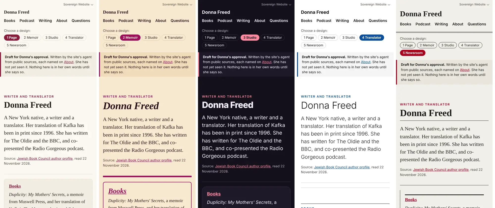
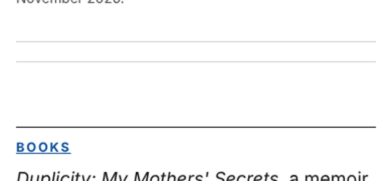

Synthetic users: Donna Freed, round 1
Site: https://donna-freed.author.sovereignweb.site/ at 3bee275 (v0.1.3). Run: 23 November 2026, about 13:40 UTC, by design.b.rounds. Look score: 2.4 (2, 3, 3, 2, 2). Best design votes: 3 (Studio) twice, 5 (Newsroom) twice, 2 (Memoir) once. All five named design 4 (Translator) the weakest. Nobody said "wow". The review.
Method: Synthetic users. One agent played five personas, in its own folder: - a phone visitor; - a reader of her memoir or a listener of her podcast; - a low-vision reader; - a design critic; - a literary agent, festival programmer or journalist.
The inner pages were captured in design 1 only. These are simulations, and never replace a real person.
| Persona | Look | Best | The one change |
|---|---|---|---|
| Phone visitor | 2 | 3, Studio | "put the name and one picture first, and fold the design pills into one small control" |
| Reader or listener | 3 | 2, Memoir | "add the Duplicity cover, a two-line description of the book, and a 'Buy / Listen' row" |
| Low-vision reader | 3 | 3, Studio | "raise the source and footnote text to at least 15px, and use darker grey" |
| Design critic | 2 | 5, Newsroom | "give each design a different idea of the layout ... not only a different palette" |
| Agent or programmer | 2 | 5, Newsroom | "a contact or 'for press and events' line, even if it is only a link to the publisher" |
Agreed by three or more
- No image at all (all five): no photograph and no book cover. The site says why, rightly: "No photograph, no contact details and nothing about her family or private life."
- Design 4 is the weakest (all five): empty hairline bands and thin light type.
- The sourcing is admirable (four): "Everything here is a claim from a public source, named below."
- The machinery comes first (three): the design pills and the draft banner push her name about 400 px down on a phone.
- Thin content and no next action (three): Writing is empty, the cards say "Links to follow when she chooses them", and there is no way to buy, listen or get in touch.

